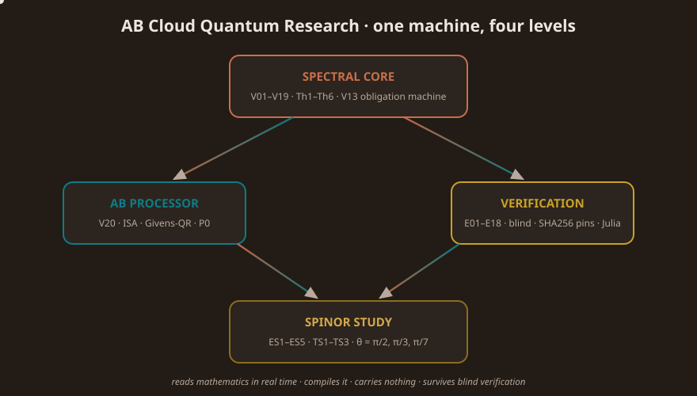

One program · one discipline · one loop
43 campaigns PASS · 9 theorems · 649+639 blind zeros · storage = 0 · RH honestly blocked

🏛 Architecture tour
The four levels of one machine, animated. Click to send a pulse from the core.
HTML · interactive📈 Zeros live
Zeros rising along Re(s) = 1/2 and N(T) counting — the E17 flagship in motion.
HTML · interactive🌀 Spinor lab
θ = π/2, π/3, π/7 — cycles, reset (TS2) and volatility, drawn live.
HTML · interactive🗂 How this folder works
Campaigns → verdicts → artifacts → monographs: the evidence machine.
HTML · interactive🔁 Pipeline flow
Verdict → dataset → artifact → monograph: the reproducibility loop.
HTML · interactive🎞 GIF collection
zeros_rising · pipeline_flow · spinor_cycles · campaign_timeline · compiler_gates — ready for READMEs.
GIF · 600px✨ Animated SVG
architecture_flow · critical_line · spinor rings · folder_map · logo_pulse — SMIL, GitHub-visible.
SVG · SMIL🧪 Hypothesis lab
Not just watching — test your own hypotheses in the browser laboratory.
HTML · interactive